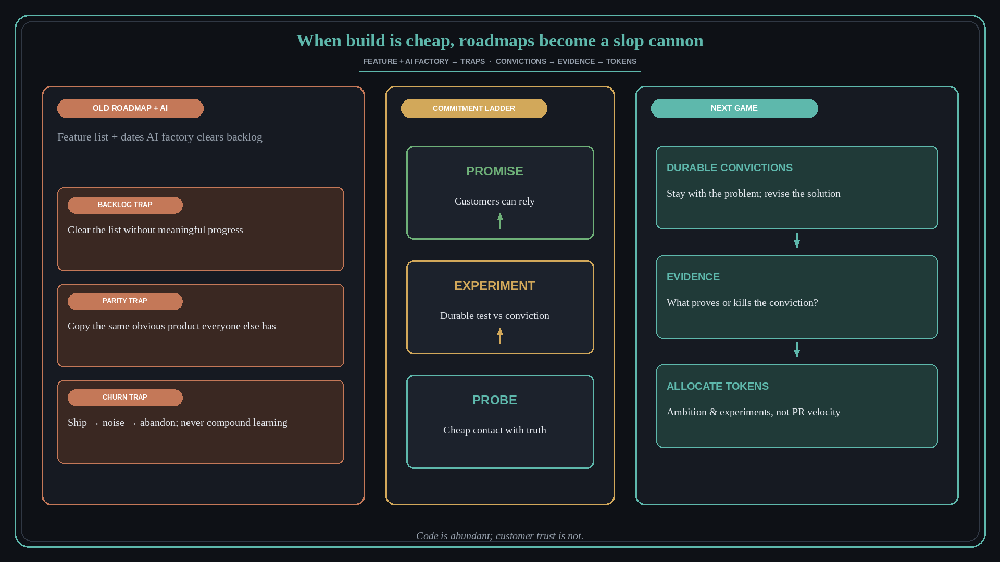

When build is cheap, roadmap features become a slop cannon
Source: Claire Vo via Lenny Rachitsky (@lennysan)
original post · talk: The last roadmap
What it claims
The bottleneck moved from engineering scarcity (say no / cut the line) to conviction: more execution capacity than belief about what is worth building. Three traps with an AI factory on old roadmaps: backlog trap (AI clears the backlog without meaningful progress), parity trap (everyone copies the same obvious product), churn trap (ship, see noise, abandon, never compound learning). “Roadmap zero”: everything on the backlog is buildable, so effort stops being a useful proxy and prioritization-as-stack-rank stops being strategy. AI + old feature roadmaps accelerate those traps at machine speed. The remaining constraint is truth/contact with customers — move upstream from what to build to what to prove. Prefer durable convictions + disposable features; good stubborn stays with the problem and revises the solution; bad stubborn moves the goalposts because tokens are cheap. Commitment ladder: probe → durable experiment against conviction → promise (customers can rely). Code is abundant; customer trust is not. The next game is ambition (huge experiments per month, knowing most will fail), not PR velocity.
Why it matters for a PO
Feature+date roadmaps made sense under engineering scarcity. With cheap build, the PO’s job is conviction, evidence, and honest commitment level — not clearing a backlog.
3 takeaways
- Name the trap you are in (backlog / parity / churn) before adding more AI velocity.
- Replace feature lists with durable convictions + what evidence would prove or kill them.
- Label every item probe / experiment / promise so GTM and customers hear the real commitment.
Practice this week
Take one roadmap row. Rewrite it as a conviction + evidence that would prove/kill it + commitment label (probe/experiment/promise). Drop or feature-flag anything you would not yet swear customers can build on.